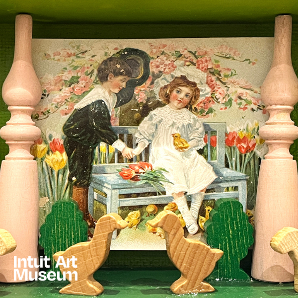

Valentine’s Day Pop-up Art Market
Treat yourself or your valentine to one of a kind art by Intuit Store artists and staff. Only available at IAM for one day, handmade items including jewelry, prints, ceramics and more. After you shop, spend time exploring the Museum.
Vendors Include:
Amy Huske
Amy Marks
Arts of Life
J‑Bird Clay
Mary Sundstrom
Project Onward